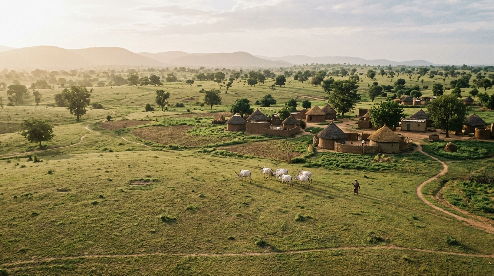
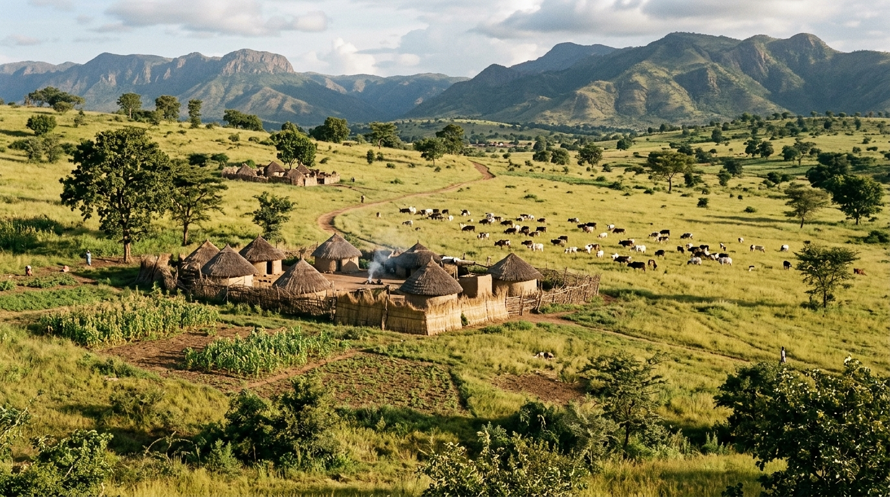
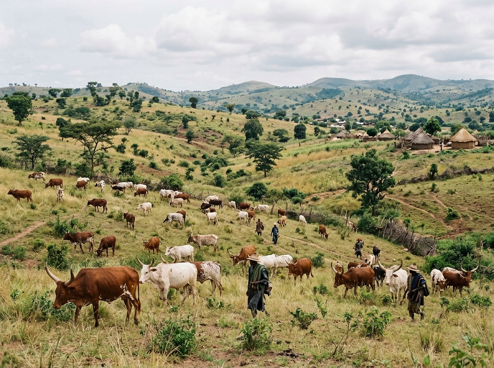
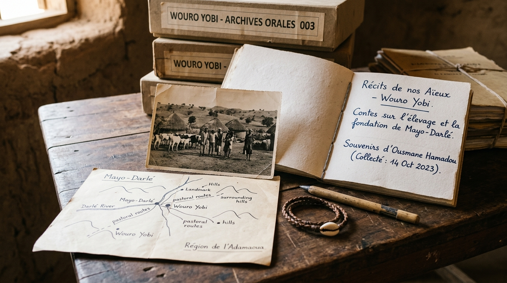
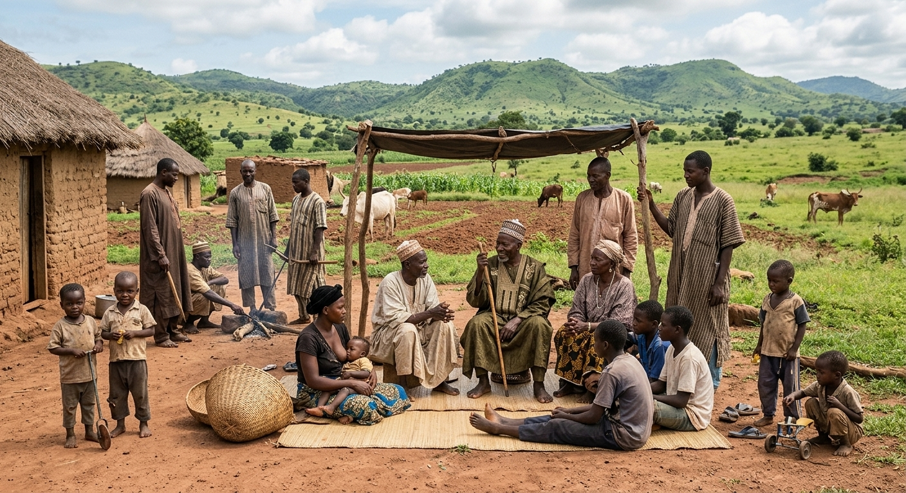
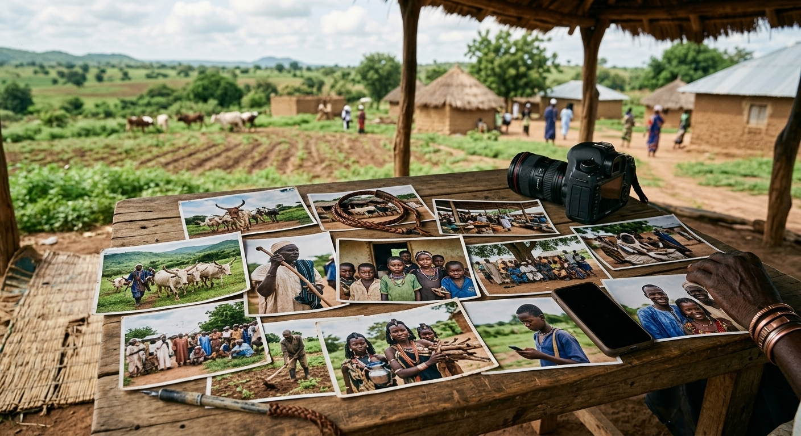

Traditional Leadership
His Majesty Maître Aliou Amadou
Traditional leadership of Wouro Yobi, guiding custom, dialogue and community decision-making.
Leadership ProfileA Mbororo Community in the Adamawa Region, Cameroon
Situated in the Adamawa Region of Cameroon, Wouro Yobi is part of a much larger story — one shaped by centuries of pastoral knowledge, traditional leadership, education, community resilience and the changing history of Cameroon.

Find Something Specific
Find people, places, stories, memories, projects and references across Wouro Yobi.
Six Ways Into the Archive

01 — Identity
Leadership, language and Mbororo heritage.

02 — Way of Life
Seasons, livestock and daily rhythm.

03 — Memory
Oral history, elders and the timeline.

04 — Future
Education, youth and development.

05 — People
Leaders, elders and community voices.

06 — Media & Stories
Photographs, journal entries and field notes.
Only Now, Wouro Yobi
Within this wider story of Cameroon, the Adamawa Region and the Mbororo people sits one specific, living community — the subject of this entire archive.
Mayo-Darlé
Adamawa, Cameroon
6°30'21.2"N, 11°30'08.1"E
Mbororo, pastoral
Leadership, education, agriculture, youth and ongoing development are documented in depth across the archive's other chapters. This page is the entrance; each thread continues elsewhere.
Markers above are planned additions to the Map Explorer as each location is documented and photographed.
A Glimpse of Daily Life
A taste of what's documented in full in Way of Life.
Room 03 of the Archive
Wouro Yobi's own history is being documented through community memory, elder interviews and evidence gathering — not assumed, and not yet complete. No interviews have been recorded so far; this page will grow as they are.
Status: Documenting and verifyingRoom 05 of the Archive
Fuller biographies live on the People page — these are brief introductions only.
Traditional Leadership
Traditional leadership of Wouro Yobi, guiding custom, dialogue and community decision-making.
Leadership ProfileRegional Advocacy
President, MBOSCUDA – Mayo-Banyo, connecting Wouro Yobi to wider Mbororo advocacy and development networks.
Full ProfileRoom 04 of the Archive
Education, agriculture, youth leadership, infrastructure and environment sit alongside Wouro Yobi's traditions — not in competition with them.
Kindergarten Expansion — In Progress
Timeline Journey
From the region's deep pastoral past to Wouro Yobi's own documented present. Regional history is drawn from public reference sources; community-specific points are marked and will be expanded as oral history and local records are verified.
Fulɓe pastoralist migration into the wider Adamawa region begins, alongside the area's established Sudanic and Bantoid-speaking peoples.
Wikipedia →Following a jihad led by Modibbo Adama from 1809, the Adamawa Emirate is formed as part of the Sokoto Caliphate, reshaping regional authority.
Wikipedia →Germany begins annexing the territory that becomes German Kamerun, reaching the Adamawa Plateau by the turn of the century.
Wikipedia →Germany's defeat in West Africa during the First World War leads to the territory's partition between British and French administration.
Wikipedia →French Cameroun gains independence, with Ahmadou Ahidjo as the country's first president.
Britannica →Following a UN-supervised plebiscite, the former British Southern Cameroons unites with French Cameroun to form the Federal Republic of Cameroon.
Wikipedia →The Adamawa becomes one of Cameroon's ten administrative regions, with Ngaoundéré as its capital and tin mining active near Mayo-Darlé.
Wikipedia →Wouro Yobi's own founding and early history are being traced through elder interviews — see Our Memory.
Our Memory →New classrooms extend early education access for the community's youngest children.
Our Future →This documentation project begins, gathering and verifying evidence as it becomes available.
About the Archive →How the Archive Connects
Select any node to jump straight to that part of the archive.
A simplified view. In practice, People also link directly to Events, Projects to Documents, and so on — every object is a doorway to another.
The Adamawa Region takes its name from Modibbo Adama, a 19th-century Fulani leader.
This Is an Archive Under Active Construction
Meaningful counts, not inflated ones. These figures reflect the archive's honest current state and are updated directly as new material is published.
Our home exists to document the life, heritage and aspirations of Wouro Yobi from the perspective of its people. We preserve our history, celebrate our culture, record our progress and share our vision for the future — so that future generations, researchers, partners and the wider world can understand who we are and what we are building together.Editorial Mission — Wouro Yobi Living Archive
 Education
Education Agriculture
Agriculture Youth
Youth Infrastructure
Infrastructure Renewable Energy
Renewable Energy